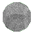
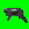
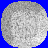

Advanced Help
Game modes
2 Players: Try to defeat a friend!Keys for the second player are: A(left), D(right), S(take balls), W(throw balls). If you press CONTROL(playerr1) o SHIFT(playerr 2) you can create more balls in case you run out.The more reactions you get, the more lines youll add to your opponent!
Puzzle: Eliminate all the balls. Beat this mode to unlock Mayhem mode.
Mayhem 2: Similar to Mayhem mode, but now each ball changes randomly. Get 2000 points to unzip gmd.zip!!.
Types of balls
Many thanx to Latin_soft and Ben_Briggs for their help and to DT for his DTbrowser.dll
Here you´ll find a description of the game modes and types of balls you´ll find in Magical Drop GM. Remember, when playing you can return at any moment to the title screen by pressing ENTER.
Normal: Try to eliminate all the balls before they crush you. With 100 points you will unlock the 2P mode and with 100 the Puzzle mode.
Mayhem: Like Normal mode, but the balls change therri colors. There are a lot of powerups to help you. Get 2000 points to unlock Mayhem2.
 To eliminate them, destroy a group of balls bear them. The rest of these balls in screen will get that color.
Create the same number of reactions as they show. When they blow up, they will eliminate a whole row!. You can´t pick them.
Join them with 2 or more balls of their color and they´ll aliminate all the balls of that type in screen. You can´t pick them.
 A machine gun! Pick it fast or it will turn into a stone!
Eliminate them like the stones, or by joining 3 of them. They´ll eliminate rows and columns!
 You can´t eliminate them nor pick them. They only appear in Puzzle mode.
Like the ones above, but they can stay in the air.
And to Prof. Mark Overmars for creating Game Maker and making this game possible.
And of course, to everyone at ZONAMAKERS, the best GM community.